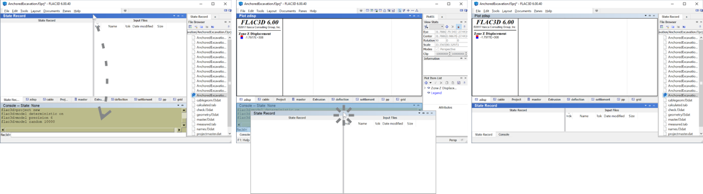

堆叠


图 1：状态记录窗格从一个选项卡组中分离，并移动到主窗口中的一个新堆叠组中。左：单击并拖动窗格标题栏。中：窗格位于目标空间上方（在此情况下为控制台窗格，以蓝色高亮显示），并释放鼠标。右：窗格停靠在新位置。
停靠在程序窗口内的窗格可以相互堆叠，此时它们将显示为选项卡组。每个窗格的选项卡显示在该组的底部。每个选项卡都带有用于识别的标签。可堆叠的窗格数量没有限制。任何窗格类型都可以堆叠在任何其他窗格上。整个选项卡组不能堆叠到另一个选项卡组上；窗格只能一次移动一个。
正如先前在关于移动窗格（moving panes）的主题中所提到的，窗格不能与控制面板堆叠。
| 这些内容对您有帮助吗？… 版权与免责声明 |
FLAC3D © 2019, Itasca | 原文更新于 2020 年 10 月 8 日 |